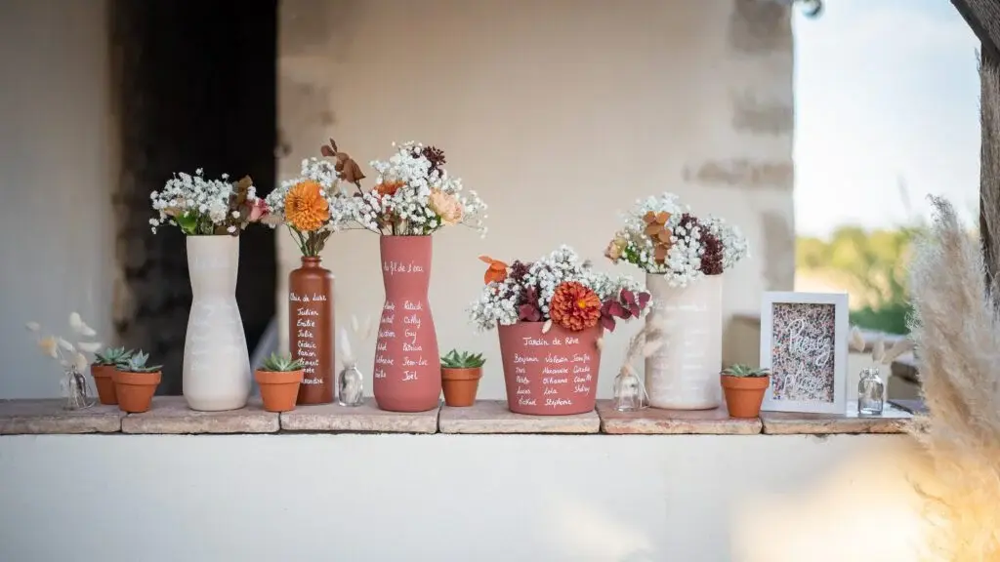
Qu’est-ce qu’un mariage réussi ? Un couple de mariés heureux, une ambiance festive, un traiteur plus que savoureux, des invités endiablés et surtout une décoration à en couper le souffle.
Qui dit décoration de mariage, dit beaucoup de fleurs, table d’honneur, art de la table, mais surtout plan de table. Du choix du lieu de réception aux ajustements de dernières minutes sur les tables, les défis et les surprises peuvent être monnaie courante le jour J notamment en ce qui concerne vos invités. Car soyons honnête, le plan de table peut être un véritable casse-tête. Entre notre cousine préférée qui ne peut pas se voir sa tante ou notre oncle qu’on ne peut pas placer n’importe où si l’on ne veut pas voir la soirée partir en fumée, le plan de table doit être mûrement réfléchi en amont. Et tous les changements de dernière minute peuvent être source de frustration. Cependant, le plan de table présente l’avantage d’être incontournable pour tous les invités, en faisant ainsi un élément décoratif INDISPENSABLE.
Si vous êtes en panne d’inspiration pour votre plan de table ou cherchez quelques idées afin de réveiller votre esprit créatif, découvrez dans cet article 23 idées de plan de table originales afin d’aider vos invités à trouver leur place à table.

Pourquoi mettre un plan de table à son mariage ?
Le plan de table va permettre de disposer vos invités sur les différentes tables lors de votre mariage. Sauf si vous optez pour un placement libre, un plan de table reste un indispensable, car il vous offre la garantie d’une organisation parfaite et vous évitera les nombreuses questions de vos invités du type : « Je suis placé où moi ? ». Le plan de table se révèle donc être utile et incontournable, car vous pourrez le remarquer, mais les invités consultent généralement dès leur arrivé le plan de table afin de connaître leur placement.
Où placer le plan de table ?
Généralement, le plan de table est disposé à l’entrée de la salle de réception, offrant ainsi à vos invités la possibilité de le consulter avant d’entrer, afin de trouver plus facilement leur place et éviter l’agitation autour des tables.

23 idées de plan de table :
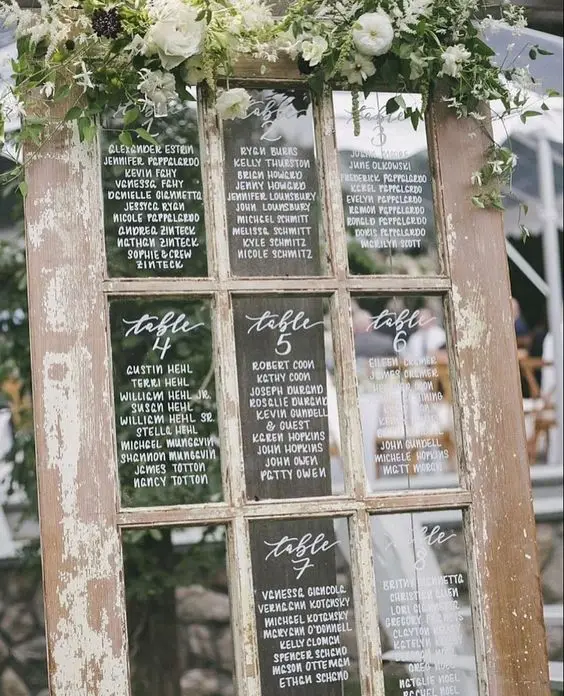
1. Les fenêtres
Des fenêtres anciennes réutilisées comme plan de table apportent une touche vintage et élégante à la décoration. Vous pouvez soit choisir d’écrire directement sur les vitres ou alors de coller des stickers avec une calligraphie élégante.
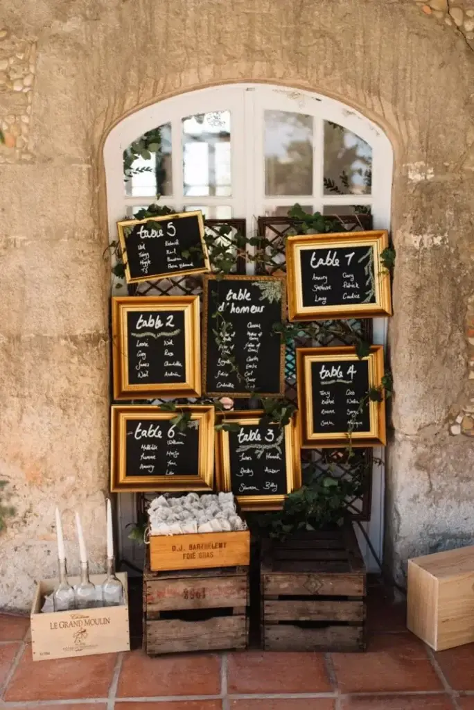
2. L’ardoise
Un plan de table en ardoise est idéal pour un mariage au thème vintage. Avec une craie et une calligraphie soignée, vous obtenez le plan de table parfait. Pour plus d’originalité, vous pouvez l’améliorer en l’agrémentant de fleurs ou en l’encadrant.
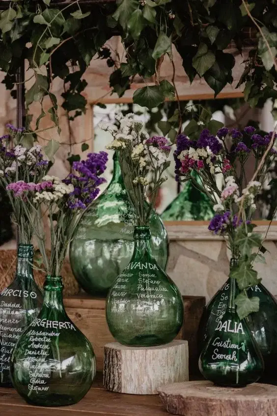
3. Les jarres
Des jarres en verre remplies de sable, d’eau ou laissées vides offrent des supports créatifs pour afficher les tables et noms d’invités, ajoutant une touche raffinée à la décoration. Des fleurs fraiches ou séchées peuvent être un plus pour rajouter une touche florale.
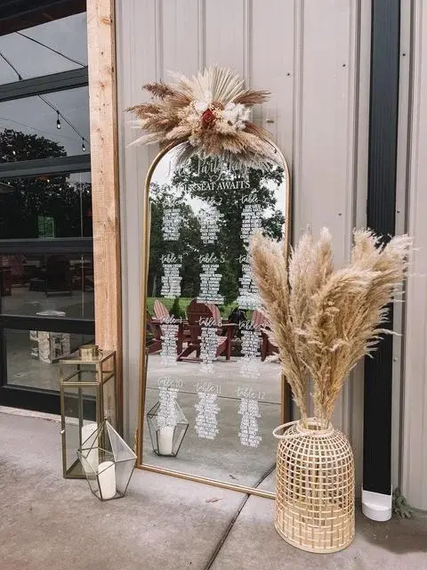
4. Le miroir
Un grand miroir encadré utilisé comme tableau de plan de table apporte une touche de glamour et de sophistication au mariage. Apposer les noms des tables et des invités avec des stickers à la calligraphie soignée fera beaucoup d’effet.
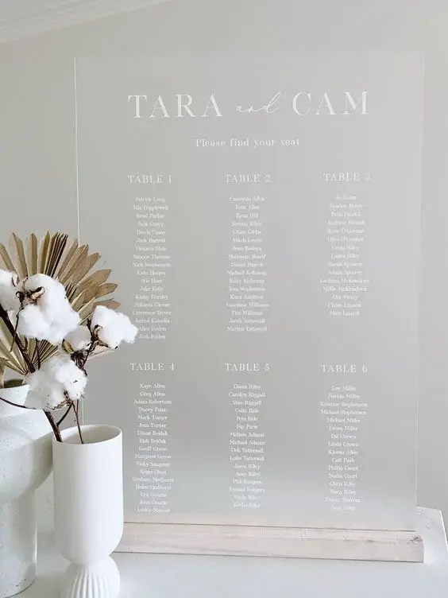
5. Le panneau en plexiglass
Très tendance, le panneau en plexiglass transparent ou peint donne un aspect moderne et épuré au plan de table, créant un effet de transparence et de légèreté. Vous pourrez soit graver les noms ou coller des étiquettes avec de jolies calligraphies et disposer votre plan de table sur un chevalet ou à même le sol.

6. La roue de vélo
Pourquoi ne pas opter pour l’originalité en utilisant une roue de vélo comme support pour vos pancartes ? Les cartons avec les compositions des tables sont accrochés simplement aux rayons à l’aide de petites pinces à linge. Cette idée est un moyen d’ajouter une touche vintage à votre mariage.
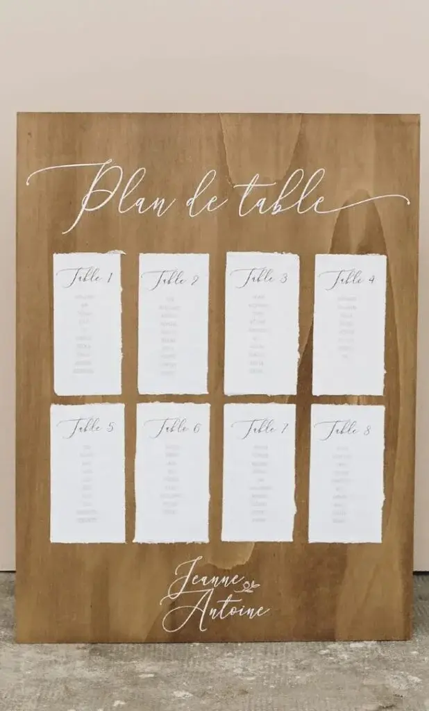
7. Le panneau en bois
Un panneau en bois naturel ajoute une note rustique au plan de table, parfait pour un mariage au thème champêtre. Tout comme sur un panneau en plexiglass, les noms peuvent être gravés pour conserver l’aspect authentique du bois, ou bien peints ou écrits avec une typographie élégante pour un effet plus raffiné.
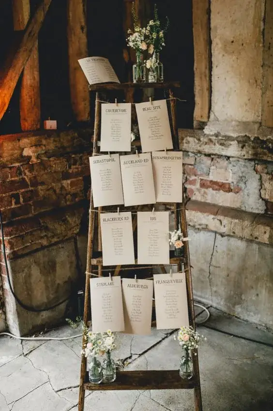
8. L’échelle en bois
Une échelle en bois utilisée comme support pour afficher les noms des convives apporte une touche rustique à la décoration. Les tables et leur composition peuvent être inscrites sur de jolies pancartes accrochées à l’échelle. Pour parfaire un thème campagne ou champêtre, une touche de verdure comme du lierre peut être idéal.

9. Les pots en terre cuites
Des pots en terre cuite remplis de plantes ou de fleurs servent de support rustique et authentique pour afficher les noms des invités, ajoutant une touche naturelle et idéal pour un thème champêtre.
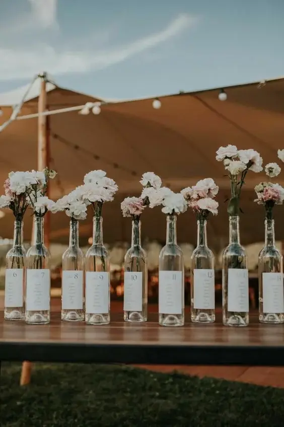
10. Les bouteilles de vin
Des bouteilles de vin vides, soigneusement disposées sur un support sont une idée de plan de table originale pour afficher les noms des convives d’autant plus que la région bordelaise est réputée pour ses bons vins !

11. Les planches à découper
Des planches à découper en bois naturel utilisées comme supports pour afficher les noms des convives apportent une touche insolite à la décoration. Pour plus d’originalité les tailles, formes et couleurs peuvent être mélangé.
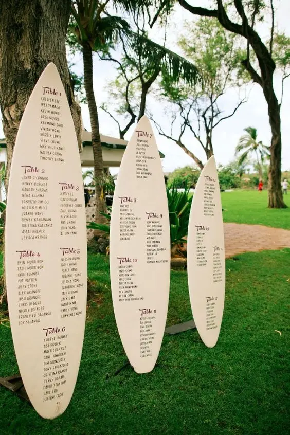
12. La planche de surf
Une planche de surf décorative utilisée comme tableau de plan de table apporte une ambiance décontractée et estivale, parfaite pour un mariage en bord de mer ou sur le thème de la plage.

13. Le tissu
Un drapé de tissu disposé sur une arche en métal est une idée originale pour un plan de table. Pour davantage de créativités, les tissus peuvent être multipliés et de différentes couleurs afin de créer un effet asymétrique et moderne.
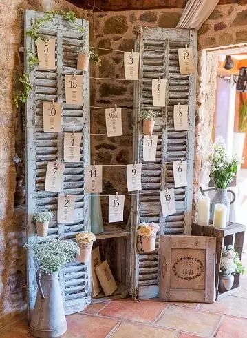
14. Les volets
Des volets anciens réutilisés comme supports pour afficher les noms des invités apportent une touche vintage et authentique à la décoration. Les noms inscrits sur une jolie papeterie pourront être accrochés à l’aide d’un fil ou dans les persiennes.

15. Le rotin
Des éléments en rotin, tels que des cercles décoratifs ou des sets de table, peuvent faire office de support pour les noms des invités. Ce type de plan de table est idéal afin d’ajouter une touche champêtre ou bohème à votre mariage.
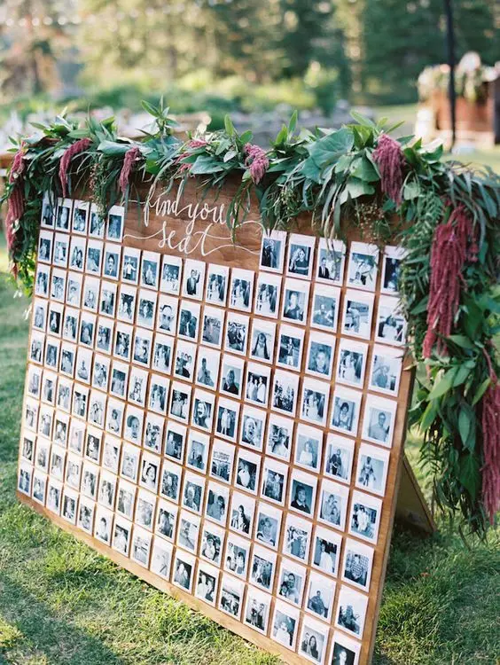
16. Les photos
Des photos encadrées des invités enfants, disposées sur un tableau, peuvent constituer un plan de table drôle et nostalgique. Les convives pourront s’amuser à deviner à qui correspond chaque photo tout en découvrant leur table.

17. Les fleurs
Les fleurs sont toujours la garantie d’un joli plan de table. Plusieurs options peuvent s’offrir à vous : les disposer dans des pots avec les noms des invités dessus ou bien en piquer dans des jardinières accrochées à un support et les noms de vos convives inscrit sur des étiquettes plantées juste dedans.
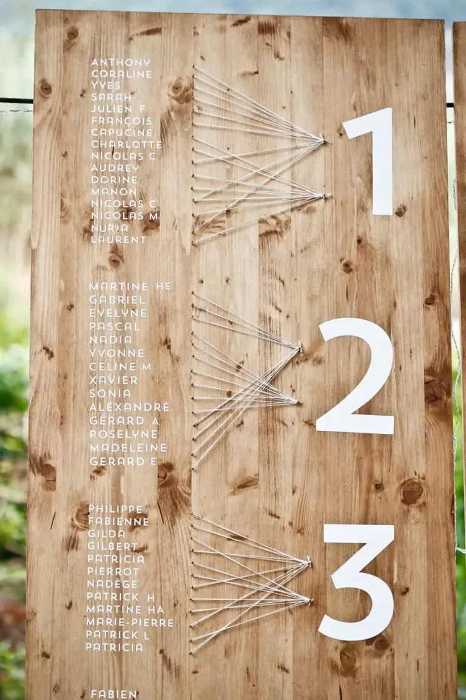
18. La ficelle
Pour un plan de table moins traditionnel, opter pour la ficelle peut être une excellente idée. Une planche en bois, des clous, des stickers avec le nom de vos invités et les numéros de table et de la ficelle feront de votre plan de table, un plan originale et sortant de l’ordinaire.
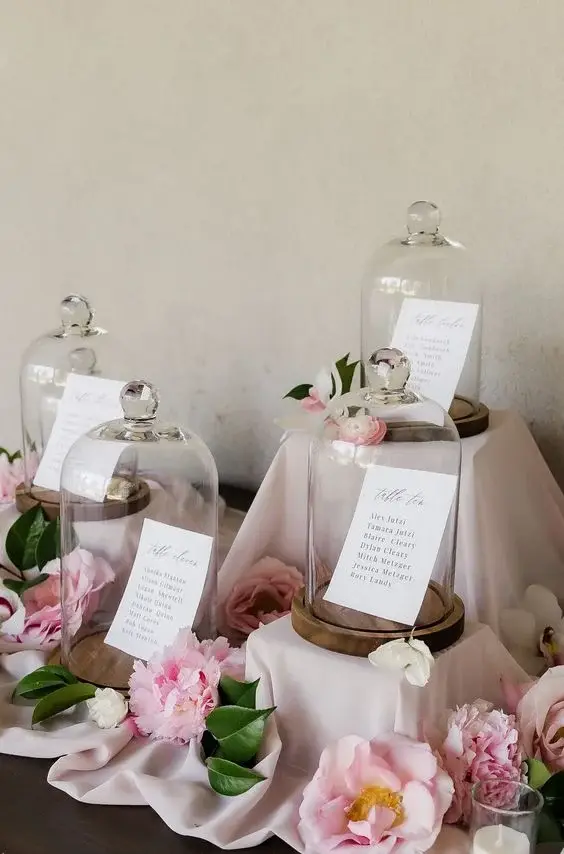
18. Les dômes de verre
Des dômes de verre renfermant des décorations tels que des fleurs servent de support élégant pour afficher la composition des tables de votre mariage, ajoutant une touche de sophistication.
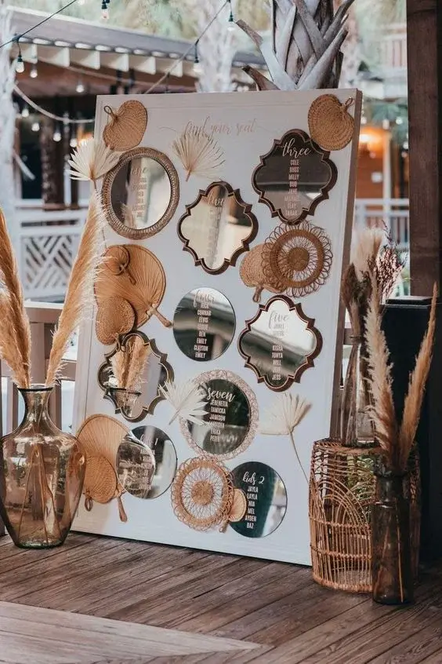
20. Multitude de miroir
Les miroirs disposés en multitude peuvent être un support intéressant pour un plan de table. Miroirs en rotin, en paille ou au style vintage à vous de choisir ceux qui correspondront le mieux avec le thème de votre mariage.

21. Les tambours à broderie
Pour ajouter une note vintage à votre mariage, envisagez d’utiliser des tambours à broder comme supports pour présenter vos listes d’invités.
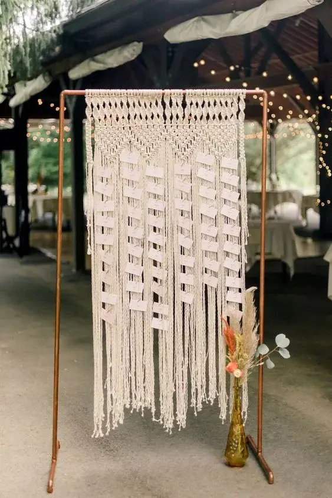
22. Le macramé
Un fond en macramé artistiquement tissé sert de support original pour afficher les noms des invités, ajoutant une touche bohème chic à votre mariage.
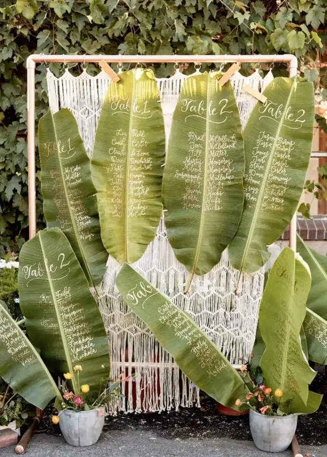
23. Le feuillage exotique
Pour un mariage avec thème exotique, les feuilles de bananier peuvent être une excellente idée pour écrire les noms des invités et afficher la composition des tables.

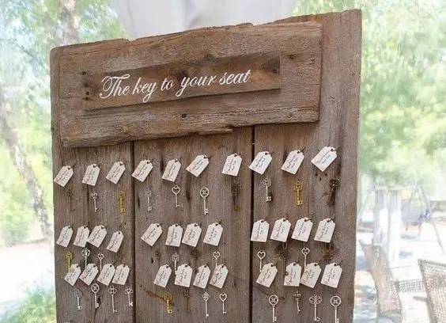
Escort cards : une alternative aux plans de table
Venue tout droit des États-Unis, une « escort cards » est une petite carte qui permet à vos invités de savoir quelle table est la leur, offrant ainsi une alternative au plan de table fixe. Contrairement à la recherche d’un marque-place, l’invité prend simplement sa carte en main et se dirige vers la table qui lui est attribuée. Traditionnellement, ces « escort cards » sont de petites cartes pliées en deux, sur lesquelles sont inscrits le nom de l’invité et le numéro de table. Cependant, de nouvelles idées émergent, transformant ces cartes en de véritables souvenirs de mariage.
C’est le cas par exemple des clés anciennes qui accrochées à un tableau peuvent apporter une touche vintage à votre décoration tout en invitant les invités à découvrir leur place avec curiosité. Les convives pourront donc repartir avec ce petit souvenir qui leur rappellera à jamais cette journée. Des « escort cards » disposés sur une coupe de champagne ou tout autre boisson peut être une idée originale pour présenter la composition des tables de votre réception. Bien évidemment, il existe bien d’autres idées pour créer un plan de table insolite et personnalisé.
Mon rôle ?
En tant que wedding planner et designer basé dans la région bordelaise, mon objectif est de vous accompagner dans les préparatifs de votre jour J. Je m’engage à répondre pleinement à vos besoins et à vos envies, tout en vous fournissant des conseils avisés. Mon but est de mettre en œuvre mes services sur mesure afin de créer un mariage entièrement personnalisé à votre image. La décoration est une des parties essentielles d’un mariage, je cherche à comprendre votre thème, couleurs et ambiance souhaitées et je veille à ce que chaque détail soit pris en compte, notamment en ce qui concerne le plan de table. Je suis là pour vous assister à chaque étape de ce processus afin de garantir que votre mariage soit à la hauteur de vos attentes et reflète parfaitement votre style et votre vision.